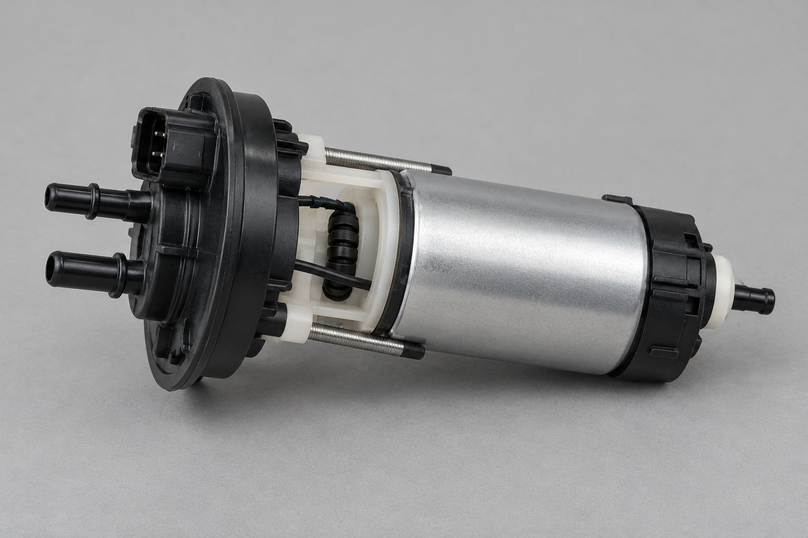
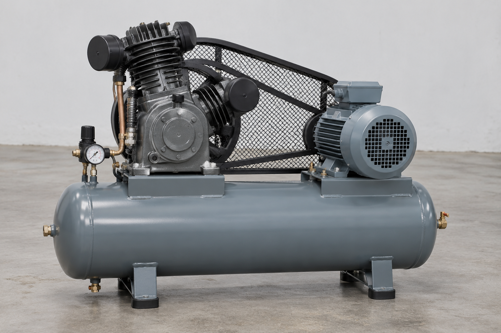

Fluid handling
WP-450 centrifugal water pump

| Manufacturer | Aquaflow Systems |
|---|---|
| Model | WP-450 |
| Reference | AF-P-1042 |
| Type | End-suction centrifugal water pump |
| Nominal flow | 450 L/min |
| Motor | 3 kW |
Selection and installation catalogue — revision 2026.1
This cover intentionally contains no product photograph.
| Manufacturer | Aquaflow Systems |
|---|---|
| Model | WP-450 |
| Reference | AF-P-1042 |
| Type | End-suction centrifugal water pump |
| Nominal flow | 450 L/min |
| Motor | 3 kW |

| Manufacturer | FuelJet Components |
|---|---|
| Model | FJ-9 |
| Reference | FUEL-0091 |
| Medium | Petrol and ethanol blends |

| Manufacturer | PneuWorks |
|---|---|
| Model | AC-200 |
| Reference | PW-AIR-220 |
| Type | Belt-driven reciprocating compressor |